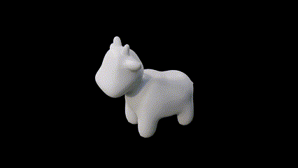

In this project we worked with geometric models. We constructed Bezier curves and surfaces using de Casteljau algorithm, and implemented functions to edit triangle meshes, including a function to perform loop subdivision. Working with the Halfedge data structure was really interesting, as it provided an easy way to iterate through elements in a mesh and thus efficiently describe the structure of a 3D geometric model.
De Castelijau’s algorithm is an approach to obtain Bezier curves given a set of control points. Control points are used to determine the shape of a curve, so with de Castelijau’s algorithm, we linearly interpolate between two adjacent control points based on a parameter of t that is between 0 and 1. Each time we linearly interpolate between a pair of control points, it produces a new control point for the next subdivision level. We continue this process recursively until there is only one point left, which is the final point our drawn curve is tangent to.
t
Below is an example of what the algorithm's process looks like and how the final resulting Bezier curve is produced:
In addition to Bezier Curves, de Castelijau’s algorithm can also be extended to Bezier surfaces. In this case, if we’re given a grid of n * n original grid points (all of them also being 3D points), we can take the algorithm and find the final, single point for each row in the grid. For example, if our grid of control points is called controlPoints, then we would want to find the final point for controlPoints[0], controlPoints[1], etc., all the way to controlPoints[n-1]. This is evaluated with the parameter u. Once we have those n control points, we then apply the algorithm again, but instead, we evaluate it with the parameter v. We do so until we are left with one final point. For this implementation, we used the algorithm to primarily find the final control point, instead of only evaluating it at a single subdivision step. This ultimately resulted in a teapot model that uses de Castelijau’s algorithm for its surface.
n * n
controlPoints
controlPoints[0], controlPoints[1],
controlPoints[n-1]
u
n
v
Given our starting vertex, we first retrieved one of its halfedges. We also created a 3D vector that would keep track of the sum of our area-weighted normals. From the halfedge that we retrieved, we then traversed along the current face to get the neighboring vertices of our current vertex - with these vertices, we can compute the area of a triangle by finding the cross product of two of its edges, taking its norm, and then dividing by two. Because we were working with a halfedge data structure, we were able to find the normal of the current face by calling on the appropriate methods, specifically accessing face() from the current halfedge, and normal() from our current face. We then found the area-weighted normals (i.e. multiplied the area of the face with its normal). This result was stored in the 3D vector that would track the summation of our area-weighted normals. From here we traversed through the rest of the faces that were incident to our original starting vertex using twin() and aggregated all our results in the 3D vector. Once we reached the original halfedge that we first started on, it gave us indication that we had finished our traversal. Finally, we normalized the sum of all area-weighted normals using the in-built function unit().
face()
normal()
twin()
unit()
Before implementing the edge flip operation, we made a diagram of the simplest mesh structure – two triangles – to list out all mesh elements before and after an edge flip operation for a given edge.
As you can see in the images above, the number of mesh elements stays the same after the flip is applied – 2 faces, 4 vertices, 5 edges, and 10 halfedges.
To implement this operation in HalfedgeMesh::flipEdge, we followed the phases described in in this helpful guide that was linked under the HalfEdge Primer Doc: http://15462.courses.cs.cmu.edu/fall2015content/misc/HalfedgeEdgeOpImplementationGuide.pdf
HalfedgeMesh::flipEdge
setNeighbors()
e0
Because we were cautious in our listing of every mesh element and doing every pointer assignment, there was very little debugging to do for this task.
Here is the teapot before and after some edge flips:
Before implementing the edge split operation, we again made a diagram of a two-triangle mesh to see which elements are affected by an edge splitting.
As you can see in the images above, a few more mesh elements are added after a split – 1 vertex, 2 faces, 3 edges, and 6 halfedges.
To implement this operation in HalfedgeMesh::splitEdge, we followed the same phases with one additional step of allocating new mesh elements.
HalfedgeMesh::splitEdge
v0
v1
v4
Here is a mesh before and after some edge splits:
Here is a mesh before and after some edge splits and flips:
Loop subdivision is an upsampling algorithm that divides each triangle that makes up a mesh into 4 smaller triangles (4-1 subdivision), with each new triangle’s vertices weighted in 3D space appropriately. This is implemented by performing an edge split on every original edge in the mesh, and then flipping the necessary edges to create the right subdivisions.
Following the recommended implementation detailed on the spec and commented in the starter code, we did the following:
Compute new positions for all the vertices in the input mesh: We iterated through every vertex and marked each as not new (i.e. part of the original mesh). We then iterated through every neighboring vertex to get the sum of all original positions of the neighboring vertices. With this sum, the degree of the vertex, and the original position of the vertex, we calculated the new position of the vertex (what it will be in the subdivided mesh) and stored that value in the newPosition member variable. The following rule describes how the position of an existing vertex is updated:
newPosition
(1 - n * u) * original_position + u * original_neighbor_position_sum
Compute the updated vertex positions associated with edges: We iterated through every edge and collected all the corresponding halfedges and vertices for the edge. Using the position of the four vertices around the two triangles that share this edge, we calculated the updated position for the vertex that would soon be added to the midpoint of this edge when edge splitting occurs. The following rule calculates this value (with A, B, C, and D being the vertex positions):
3/8 * (A + B) + 1/8 * (C + D)
splitEdge()
splitEdge
Vertex::position
After loop subdivision, sharp edges and corners become much less prominent. Corners and edges curve more, making the shape as a whole become rounder and smoother. If we want to preserve these corners and edges more during loop subdivision iterations, we can preprocess the mesh by adding more edge splits around those areas to minimize the smoothing effect.
For example, doing loop subdivision on the torus with no preprocessing causes the sharp edges and corners to round out dramatically. However, if we add more edge splits around a particular corner before performing loop subdivision, the corner remains more prominent afterwards.
Asymmetric meshes will remain asymmetric even after loop subdivision. An example of this is the cube mesh, which is made up of asymmetric edges.
Comparing the cube to the icosahedron, the cube has asymmetric corners that the icosahedron does not have. To make the cube also end up with a symmetrical result, we can preprocess the original mesh symmetric by splitting the edge that is the diagonal of each face of the cube (making each of the six faces of the cube made up of four triangles instead of two).
Here is the link to this website: link
https://cal-cs184-student.github.io/proj-webpage-thejjdiamonds/proj2/index.html